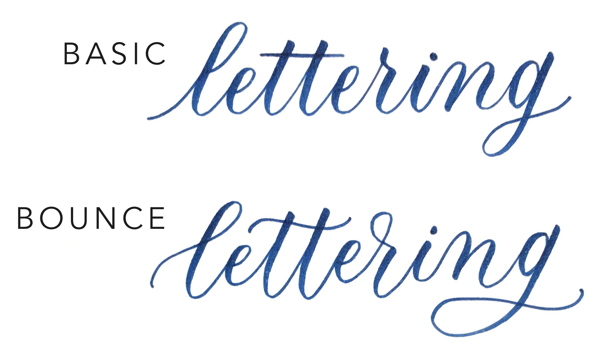

Introduction
Bounce lettering is like a 'artsy' version of brush calligraphy. It is fun, free to style and easy-going.
As bounce lettering is not strictly a type of calligraphy, the requirements are rather low. You don't need any specific pens or tools for this, excited yet? 😏
Tutorials
Let's get started by differentiating normal brush calligraphies and bounce letterings.
Regular brush calligraphies are rather 'neat' compared to bounce letterings.
The alphabets has the same height for regular calligraphies, where the 'heads' and 'tails' will not exceed the ascender and descender.
However for bounce letterings, we add some 'dip' and 'reach' to the alphabets, where it will look more bouncy and rounded.
The following image shows the difference between regular calligraphies and bounce letterings.
|  |
See the difference? Its ok if you're still confused, the video below is explained what and how to bounce letter in a detailed way.
Good to go? Although bounce letterings allows us to style the letters more freely, there are still some things to stick to.
Tips
1. Keep the letters in a line. Make sure all your alphabet follows a center line! If not, your lettering will look messy and unreadable.
2. Give enough contrast to your letters. Make sure your dips and reaches have enough contrast to make them look intentional, they may look awkward if you don't do so.
3. Keep letters consistent. Letter your alphabets consistently, have the same arc for your dips and have the same height for your reaches! You'll make them more readable!
4. Its always good to start with a gridded paper. If you're struggling with alphabet anatomy, its always a good choice to letter with gridded paper so that you can always know the baselines and stuffs!
**Psst! These are just tips and just act like a small suggestion. Everyone has their own style of lettering so its OK if your lettering does not follow the tips above! Just make sure its readable and YOU LOVE IT!
The video below shows bounce calligraphy without having a fixed dip. Still pretty and artsy huh?
Its ok no matter how you letter, keep practicing and find your very own style, have fun!!